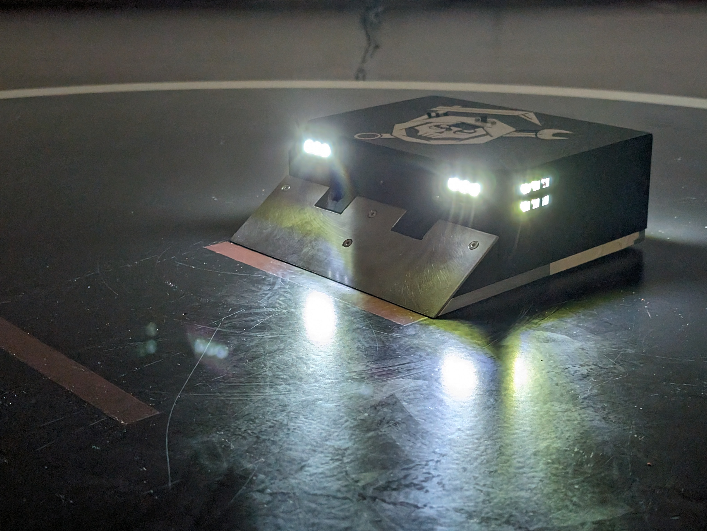
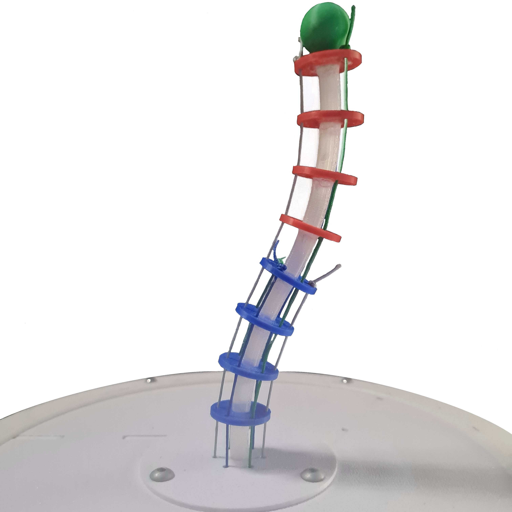
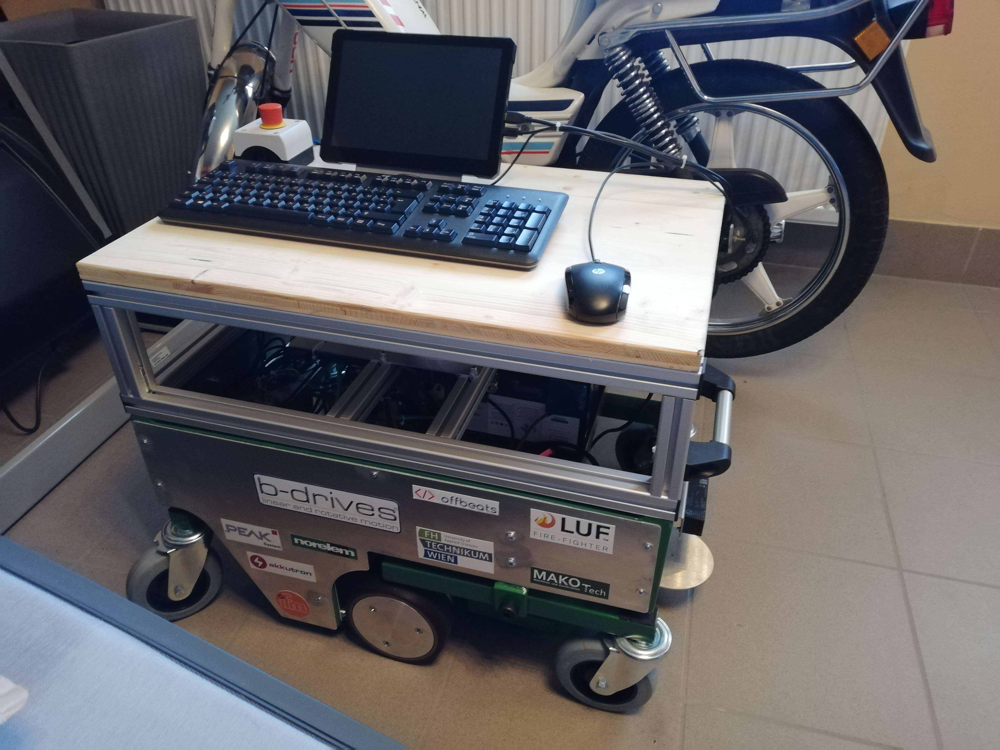

Ich bin ein begeisterter Robotik Ingenieur mit einer Vorliebe für mobile Roboter und autonome Fahrzeuge. Mit der Kombination aus Wissen und Lernbegierde strebe ich danach, die Grenzen der Automatisierung und Robotik zu verschieben.
|  |
MREapers - RoboRingout 2024MREapers ist ein Team motivierter Studenten, die einen autonomen Sumobot entwickelten, um am Wettbewerb RoboRingout 2024 teilzunehmen. Mit Hilfe eines Arduino Mikrocontrollers, Time-Of-Flight Sensoren und einer differenziellen Kinematik wurde der Roboter mit einer einfachen, aber effizienten Zustandsmaschine ausgestattet, um seine Gegner autonom auszumanövrieren und sie aus der Arena zu drängen. Damit belegte der MREapers-Sumobot im Wettbewerb gegen andere Teams österreichischer Universitäten den vierten Platz. |
|  |
MasterarbeitDiese Arbeit konzentriert sich auf die Evaluierung häufig verwendeter kinematischer Modelle für Kontinuum-Roboter auf Grundlage der Genauigkeit und des Rechenaufwands. Die Modelle werden an einem Prototypen eines sehnengetriebenen Kontinuum-Roboter getestet, um herauszufinden, welches Modell am besten geeignet ist für die kinematische Struktur des Roboters. |
 |
BachelorarbeitIn dieser Bachelorarbeit wird die Entwicklung und Fertigung einer pneumatisch betriebenen bionischen Hand vorgestellt. Dieser Prototyp besteht aus soften Materialien und PneuFlex Soft-Aktuatoren werden als Finger verwendet. In einer Testreihe wurde das Konzept auf Funktionalität geprüft. Zusätzlich werden alternative Konzepte aufgezeigt und bewertet, die es ermöglichen, die Aktuatoren nicht nur in der Ruheposition, sondern auch in anderen gewünschten Positionen zu halten. |
|  |
AMR - Autonomous Mobile RobotDieses Projekt umfasst die Entwicklung und den Bau eines autonomen mobilen Roboters. Ausgestattet ist dieser mit einem Intel NUC und diverser Sensorik zur Umgebungserfassung. Dazu zählt ein Velodyne 3D-LiDAR Sensor, sowie zwei IFM Kameras für Farb- und Tiefenbild. Die Kommunikation basiert auf einem CAN-Bus und einer softwareseitigen ROS Pipeline. |
An Approach to Numerical Inverse Kinematics of Serial Manipulators using Levenberg-Marquardt OptimizationIn dieser Arbeit wird das Problem der inversen Kinematik unter Verwendung eines Optimierungsschemas auf der Mannigfaltigkeit angegangen. Die Methode basiert auf dem Levenberg-Marquardt Algorithmus, einschließlich einer Technik, die zur automatischen Differenzierung beliebiger serieller offener Ketten verwendet werden kann. zusätzlich wird eine Open-Source-Implementierung basierend auf der Matlab-Robotik-Toolbox bereitgestellt und auf industriellen Manipulatoren getestet. |